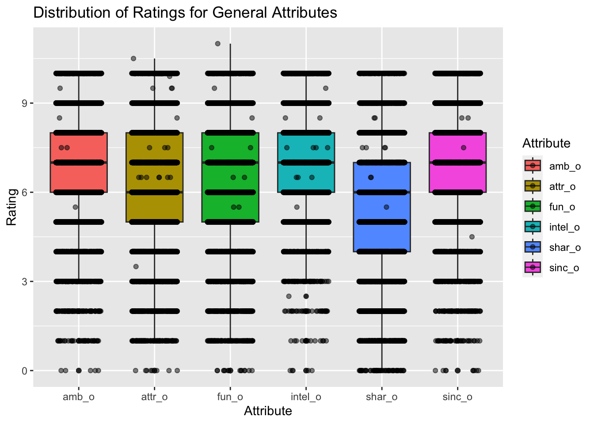
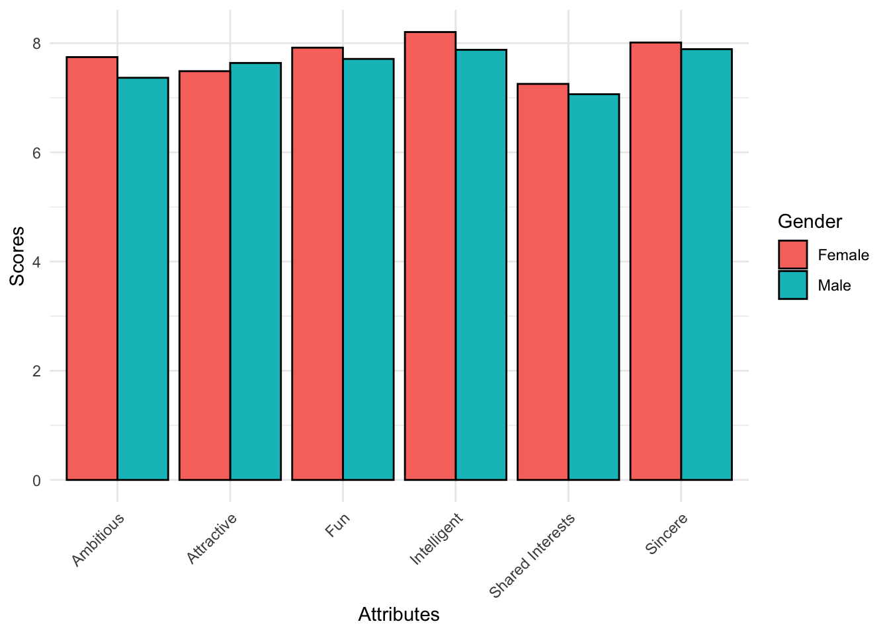
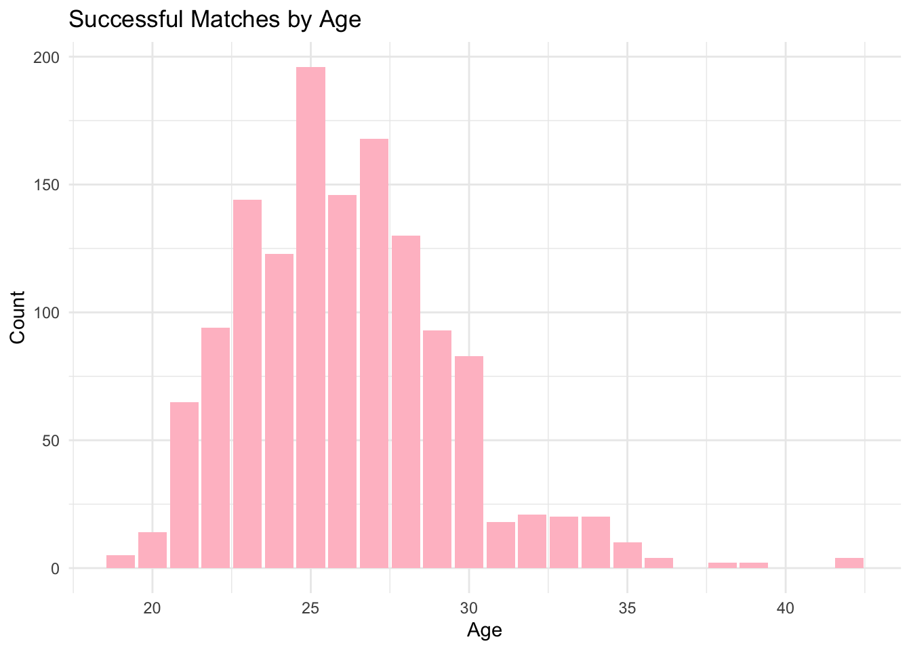
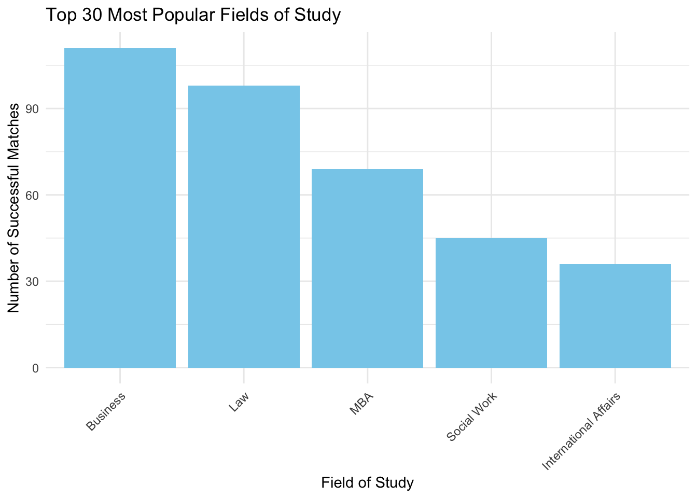

The Right One
What makes an ideal partner?
Have you ever thought of what makes your ideal partner?
There are many factors that could and would ignite the sparks of love, ranging from personality, looks to family background and beliefs. There are various ways to find love these days - dating apps, match making events, friends and family. But with so many options and opportunities, comes the problem of not knowing what’s best for you.
Dating has been a topic on the rise with multiple articles discussing it across various platforms. According to an article by TodayOnline in 2021, we are in the slowest decade of population growth since 1970.(Half a century! that’s insane!) Let’s go on an adventure to better understand what are some traits that are good to have and other factors that affects your chances of finding love!
Rate The Attributes!
Rate the following attributes and discover the attribute that matters most to you!
Expectations VS Reality
Now, let’s see if your top attribute is similar to majority!
From the visualisation above, we can see that our top 3 attributes are as follows:
Ambitious
Intelligent
Sincere
All the attributes are relatively important with shared interests as least essential. Based on a 2023 article Valerie Forgeard, we can get a deeper understanding on what makes this trait especially attractive, “Ambition’s evolution involves developing a healthy perspective towards ambition, understanding its potential pitfalls while recognizing its importance in achieving personal growth and societal progress.” and that “ambition isn’t only attractive—it’s essential.” Its more than just just having big goals and dreams, it is also about the beliefs and mindset that comes with it.
Next, intelligence. Who doesn’t love an intelligent partner? Based on an analysis of the paper “Journal Of Personality and Individual Differences” by MindBodyGreen, it concludes that, “It seemed that people, comprehensively, were looking for partners with equal levels of intelligence as themselves”, this supports the data and conclusion derived from the visualisation above.
Moving on to the third attribute, sincerity. The power of sincerity in a relationship is greater than one can imagine. It actually is key to a healthy relationship and this is mentioned on a write up on Medium, where the power of sincerity in a relationship is broken down into details and elaborated on. More than just an attribute, it “fosters trust, nurtures authenticity, and deepens emotional connections” which helps shape the relationship into one which radiates positive and authentic love to the people around us.
Now that we know the general attributes that are deemed essential, let’s take a closer look at the data to see what the different genders think of these attributes!
Does Gender Affect The Top Attributes?

With reference to Zula’s recent article, it is mentioned that “81% of the respondents also mentioned that being kind is more important than physical attributes”. The visualisation above supports that statement by categorizing “Attractive” as a non-essential but good to have attribute. Both genders have similar top 3 preferred attributes - Intelligent, Sincere and Fun. Despite the different rankings from both genders, these are the attributes that are generally essential so for all the single pringles out there, do take note!
More Than Just Personality! - Age & Career
For those who are wondering if personaility is the only factor, it’s not! There are various factors that affects the chances of finding a partner such as age and career. There are too many discussions on how big the age gap should or should not be, it gets a little overwhelming.

The visualisation above shows he age distribution of all successful matches and it seems that people aged 25 have most successful matches so if you are 25 - might be your turn soon! <3 It seems like our twenties is a phase filled with love and opportunities with the high numbers of successful matches, how exciting!
Moving on to something more realistic, something that tells us about how much income our partner is earning, their education level, something that every relative will ask for sure - Career. Let’s dive into the data and see which fields of study are most popular among all successful matches!

The top few most in demand field of study are business, law, MBA (Master of Business Administration) , social work and International Affairs listed in decreasing popularity. Of course there are many more fields of study and there is absolutely nothing wrong with studying in fields outside of the mentioned ones. But it seems like being in business is a bonus!
Conclusion
Do not worry if the traits mentioned above are not your best traits. Just be yourself and you will attract people of your vibe! Do not rush or try to force things if it does not work, love takes time - be patient. Everything will fall into place and while you are waiting, work on yourself! Become the best version of yourself with so much more to offer. All the best, you got this! <3